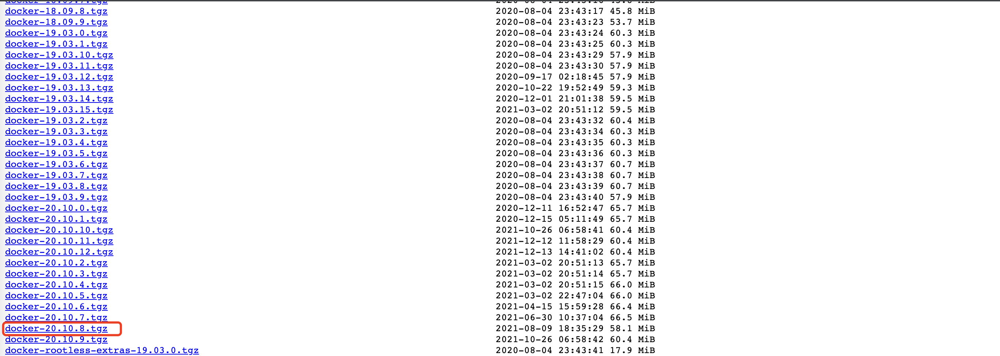

linux docker 安装与配置
一、docker 离线安装
1.1、下载离线安装包
访问地址: docker 离线下载地址
选择对应版本,此处选择
docker-20-10.8.tgz

可以下载到本地后上传至服务器，或者在服务器执行以下命令直接下载
yum -y install wget && wget https://download.docker.com/linux/static/stable/x86_64/docker-20.10.8.tgz
1.2、解压安装
执行以下命令，对第一步下载的docker-20.10.8.tgz进行解压
tar -zxvf docker-20.10.8.tgz
解压后会得到一个docker文件夹

执行以下命令，将 docker 命令添加到/usr/bin/目录下
cp docker/* /usr/bin/
验证
输入以下命令，验证是否生效
docker version

出现上述则说明安装成功，最下面的报错可以忽略，因为目前docker还没启动
1.3、启动 docker
需要配置 docker.service
docker.service 内容如下
cat > docker.service << EOF
[Unit]
Description=Docker Application Container Engine
Documentation=https://docs.docker.com
After=network-online.target firewalld.service containerd.service
Wants=network-online.target
[Service]
Type=notify
ExecStart=/usr/bin/dockerd
ExecReload=/bin/kill -s HUP $MAINPID
TimeoutSec=0
RestartSec=2
Restart=always
StartLimitBurst=3
StartLimitInterval=60s
LimitNOFILE=infinity
LimitNPROC=infinity
LimitCORE=infinity
TasksMax=infinity
Delegate=yes
KillMode=process
[Install]
WantedBy=multi-user.target
EOF
移动 docker.service 到如下目录
mv docker.service /usr/lib/systemd/system/
创建 daemon.json 默认配置(这个适用于/etc/docker 不存在的情况下)
mkdir /etc/docker && echo "{}" > /etc/docker/daemon.json
重新加载配置
systemctl daemon-reload
启动 docker
systemctl start docker
设置开机自启
systemctl enable docker
验证
输入以下命令，即可查看 docker 是否启动
systemctl status docker

启动成功，到此 docker 安装结束!
二、docker 在线安装
2.1、卸载已有 docker 服务
yum remove docker \
docker-client \
docker-client-latest \
docker-common \
docker-latest \
docker-latest-logrotate \
docker-logrotate \
docker-engine
2.2、安装 epel 更新源
yum install -y epel-release
2.3、安装 docker 仓库
yum install -y yum-utils device-mapper-persistent-data lvm2
设置稳定仓库，将指定文件或 url 添加为 yum 源并启用
# 官方源
yum-config-manager --add-repo https://download.docker.com/linux/centos/docker-ce.repo
# 官方源速度较慢，可以修改为添加国内原
yum-config-manager --add-repo https://mirrors.aliyun.com/docker-ce/linux/centos/docker-ce.repo
如果提示yum-config-manager not found，请执行以下命令安装
yum install yum-utils
2.4、安装 docker
按版本号排序列出存储库中可用的版本号
(base) [root@moushi-ops-navigation-100 ~]# yum list docker-ce --showduplicates | sort -r
docker-ce.x86_64 3:24.0.6-1.el7 docker-ce-stable
docker-ce.x86_64 3:24.0.5-1.el7 docker-ce-stable
docker-ce.x86_64 3:24.0.4-1.el7 docker-ce-stable
docker-ce.x86_64 3:24.0.3-1.el7 docker-ce-stable
docker-ce.x86_64 3:24.0.2-1.el7 docker-ce-stable
docker-ce.x86_64 3:24.0.1-1.el7 docker-ce-stable
docker-ce.x86_64 3:24.0.0-1.el7 docker-ce-stable
docker-ce.x86_64 3:23.0.6-1.el7 docker-ce-stable
docker-ce.x86_64 3:23.0.5-1.el7 docker-ce-stable
docker-ce.x86_64 3:23.0.4-1.el7 docker-ce-stable
docker-ce.x86_64 3:23.0.3-1.el7 docker-ce-stable
docker-ce.x86_64 3:23.0.2-1.el7 docker-ce-stable
docker-ce.x86_64 3:23.0.1-1.el7 docker-ce-stable
docker-ce.x86_64 3:23.0.0-1.el7 docker-ce-stable
......
根据需要自行选择需要安装的版本
# 默认安装最新版本docker
yum install -y docker-ce docker-ce-cli containerd.io
# 此处安装指定版本docker
yum install -y docker-ce-23.0.0-1.el7 docker-ce-cli-23.0.0-1.el7 containerd.io
# 安装docker命令补全工具
yum install -y bash-completion
2.5、启动 docker
启动 docker
systemctl start docker
设置开机自启
systemctl enable docker
三、docker 配置
3.1 配置 docker 镜像下载加速器
tee /etc/docker/daemon.json << eof
{
"registry-mirrors": [
"https://1nj0zren.mirror.aliyuncs.com",
"https://docker.mirrors.ustc.edu.cn",
"http://f1361db2.m.daocloud.io",
"https://registry.docker-cn.com"
]
}
eof
3.2 修改 docker 的默认镜像、容器数据存储位置
docker 的默认存储位置是 /var/lib/docker/ ，在根目录下，docker 运行一段时间后，会导致根目录存储爆炸。所有最好将存储位置自定义到服务器存储最大的目录下。
然后在 /etc/docker/daemon.json 文件中指定默认存储路径（此路径可自定义），添加以下内容：
"data-root": "/vdb/docker_images"
修改如下
{
"registry-mirrors": [
"https://1nj0zren.mirror.aliyuncs.com",
"https://docker.mirrors.ustc.edu.cn",
"http://f1361db2.m.daocloud.io",
"https://registry.docker-cn.com"
],
"data-root": "/vdb/docker_images"
}
3.3 重新加载配置与重启 docker
重新加载配置
systemctl daemon-reload
重新启动 docker
systemctl restart docker